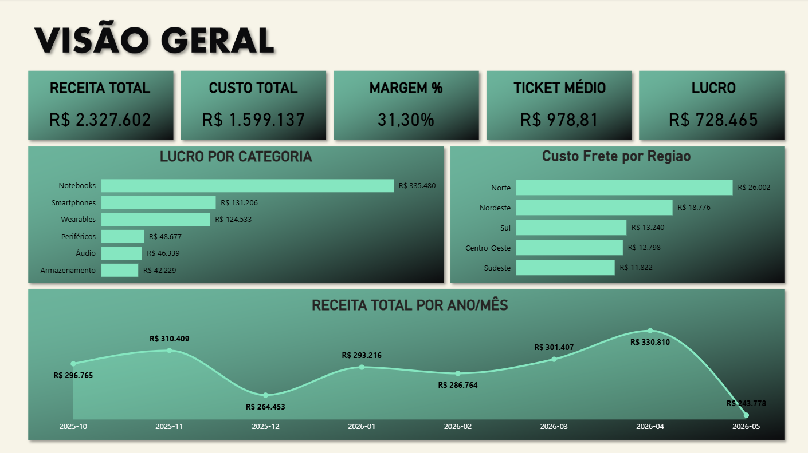
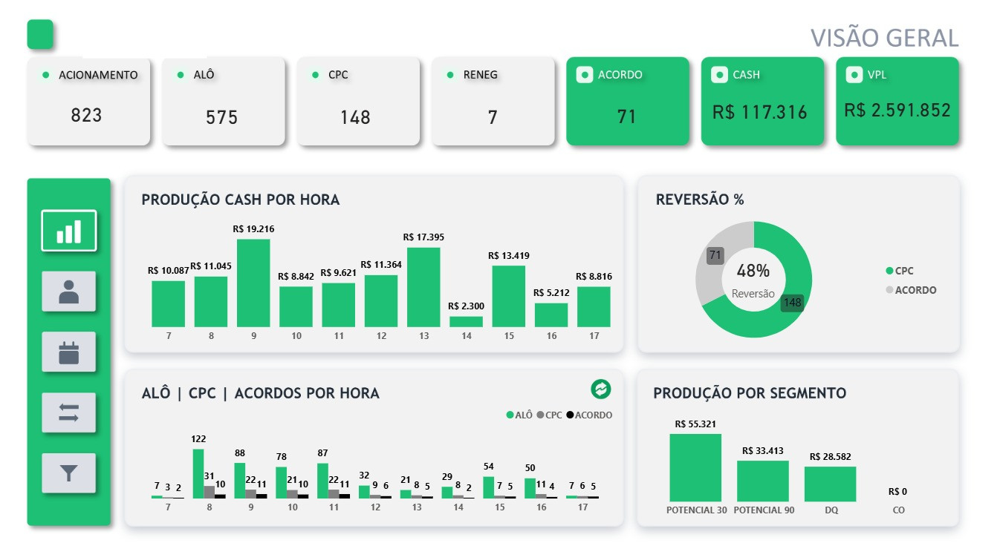

Transformo dados em decisões claras com Power BI.
Profissional em desenvolvimento na área de Análise de Dados e BI, com foco na criação de dashboards e soluções de visualização que apoiam a tomada de decisão — do tratamento da base no Power Query até o indicador final na tela.
Quem sou eu
Transformo dados em clareza para apoiar decisões de negócio.
Sou Marcos Polo, profissional da área de Dados, com experiência prática na construção de dashboards, análise de indicadores e transformação de dados em informações que fazem sentido para o negócio.
Meu trabalho começa antes do gráfico. Procuro entender o problema, o contexto e a pergunta que precisa ser respondida para então transformar dados brutos em análises objetivas, organizadas e visualmente eficientes.
Tenho experiência com Power BI, Power Query, DAX e Excel, aplicando essas ferramentas na construção de dashboards, tratamento e transformação de bases, criação de indicadores e acompanhamento de resultados.
Mais do que apresentar números, busco construir soluções que permitam enxergar cenários, identificar oportunidades, acompanhar performance e tomar decisões com mais segurança.
Dashboards em produção
Do problema de negócio ao indicador final — dois projetos, dois contextos diferentes.

Análise Financeira e Comercial — E-commerce
Contexto
Dashboard construído para transformar dados de vendas de um e-commerce em uma visão gerencial e financeira, respondendo perguntas simples e diretas: quanto a empresa fatura, quais categorias geram mais lucro, qual o custo por região, como a receita evolui mês a mês e qual é a margem obtida.
Foi meu primeiro projeto em Power BI, ponto de partida da minha entrada em BI.
O que fiz
- Importação e organização da base de dados
- Tratamento e transformação no Power Query
- Métricas em DAX: receita, custo, margem, ticket médio e lucro
- Análise de lucro por categoria e custo de frete por região
- Série temporal de receita e desenho do layout do dashboard

Gestão e Performance de Carteira — Call Center
Contexto
Desenvolvido para o acompanhamento de uma carteira em uma operação de call center, centralizando indicadores operacionais, comerciais e financeiros em uma única ferramenta — produtividade, contatos, conversão, acordos e resultado financeiro, com recorte por hora, negociador, segmento e vencimento.
Reduz a dependência de múltiplos relatórios e expõe gargalos e oportunidades no dia a dia da operação.
O que fiz
- Integração, limpeza e transformação das bases no Power Query
- Indicadores em DAX: Acionamento, Alô, CPC, Acordo, Cash, TKM e VPL
- Análises de produção por hora, segmento e negociador
- Acompanhamento de reversão/conversão e vencimentos de carteira
- Navegação entre visões e construção da identidade visual do dashboard